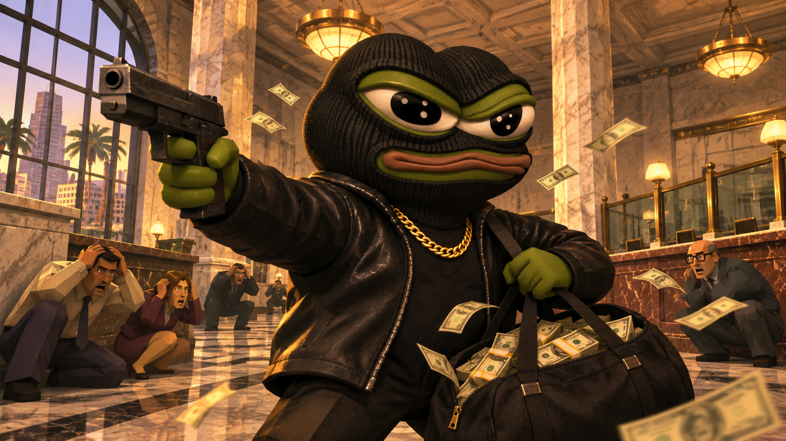
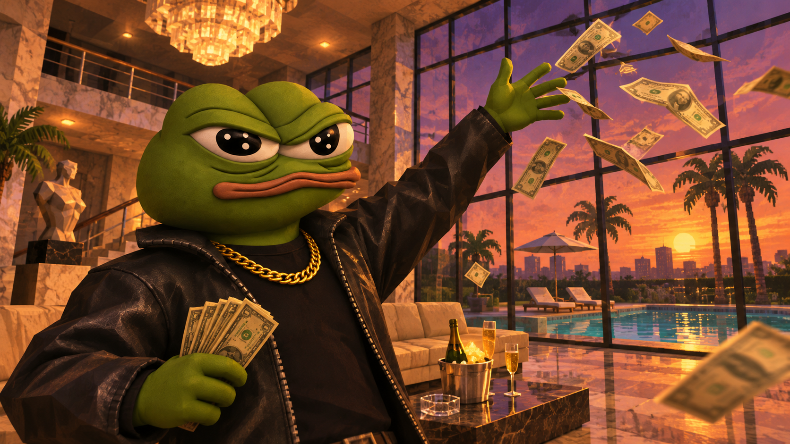
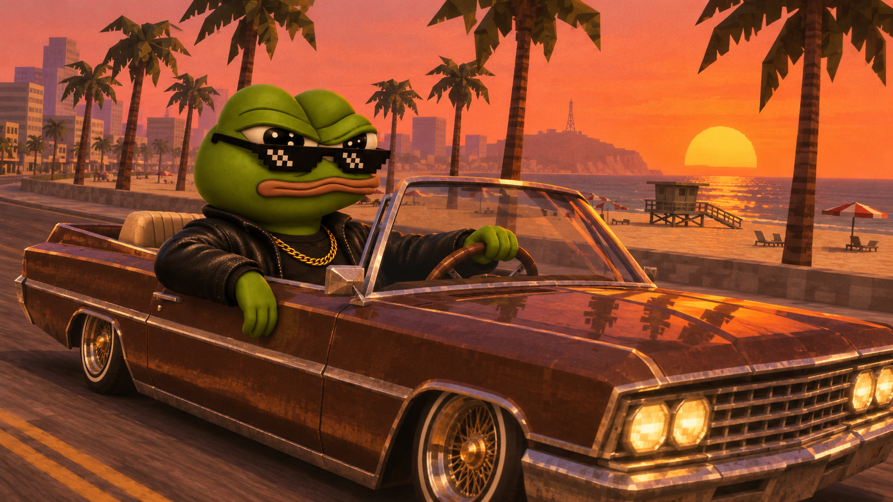

+$250,000MISSION 01
THE BANK JOB
Ski mask on, duffel bag full, alarms ringing. Out the front door before the cops pull up.
One frog. One leather jacket. Robs the bank, makes it rain, cruises the coast at sunset. Respect is earned.
Three jobs made this frog a legend on the streets. Each one paid out in cash,
chains and respect.

+$250,000Ski mask on, duffel bag full, alarms ringing. Out the front door before the cops pull up.

-$40,000A mansion with a pool and a living room full of falling bills. Worth every dollar.

+RESPECTHydraulics bouncing, one hand on the wheel, the beach road glowing orange.
Shots from the life. Tap any one to open it full size.